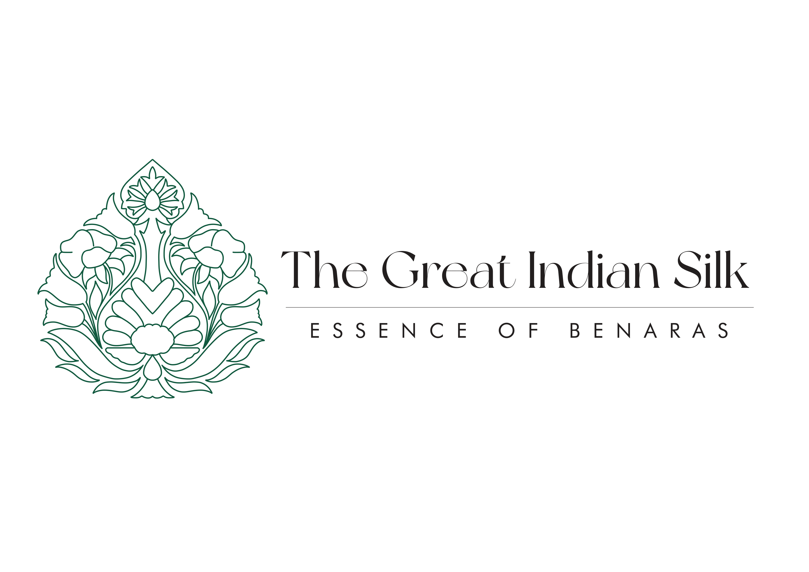

Image Editing
Book Cover

For the cover of *Benares: A World Within a World* by Richard Lannoy, I drew inspiration from my recent visit to Kashi, India, a place of profound spiritual and cultural significance.
My design aimed to capture the vibrant energy and spiritual warmth of Benares using a warm color palette of ochres, deep oranges, and golds.
Key cultural elements, such as the sacred trishool, the iconic ghats, and Banarasi silk-draped figures, were incorporated to reflect the city’s unique blend of spirituality and daily life.
These visuals symbolize the convergence of the sacred and the everyday, embodying the layered richness of Kashi.
I utilized photo manipulation, layering techniques, and subtle background textures to unify the various design elements, creating a seamless composition that evokes the essence of the city.
The typography was carefully stylized to add a traditional touch, complementing the visual narrative and enhancing the timeless feel of the design.
This project was a creative journey that allowed me to explore cultural storytelling through design.
I learned how to use color, texture, and imagery to evoke emotion and convey a sense of place.
Additionally, the project deepened my skills in photo manipulation and layering to achieve a cohesive, visually engaging result.
Designing this book cover also taught me how to merge personal inspiration with artistic execution to create a piece that resonates with viewers and captures the essence of a subject.
Logo

The logo for The Great Indian Silk celebrates the cultural richness and timeless artistry of Benaras, reflecting its heritage through a design inspired by the iconic betel leaf.
The leaf symbolizes authenticity, tradition, and natural sustainability, aligning with the essence of Benaras silk craftsmanship.
The logo’s deep green palette conveys a connection to nature and the eco-friendly values tied to silk production.
At its heart lies an intricate zari-inspired pattern, evoking the luxurious golden threadwork synonymous with Benaras silk, lending an air of elegance and tradition to the design.
The creative process involved blending traditional elements with a modern aesthetic.
Starting with the betel leaf’s shape, I refined it into a minimalist vector form, ensuring clarity and adaptability across different mediums.
Decorative floral motifs, inspired by intricate zari embroidery, were added within the leaf to highlight the ornate qualities of Benaras silk.
The final design uses clean, green line art to balance simplicity with the silk’s luxurious essence, encapsulating the heritage and sustainability of this iconic craft.
This project allowed me to delve deeply into cultural symbolism and learn how to merge traditional motifs with contemporary design principles.
I gained experience in creating scalable vector designs, incorporating intricate patterns while maintaining clarity, and using color and line art to convey specific values and qualities.
Ultimately, this project strengthened my ability to translate cultural narratives into visually compelling, meaningful branding.